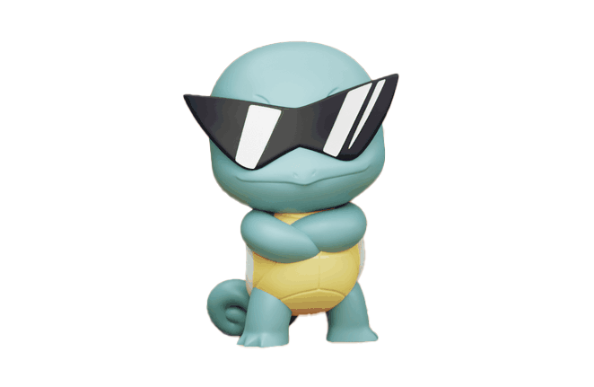
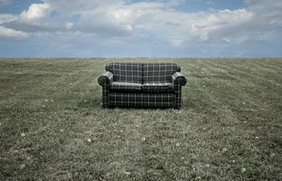
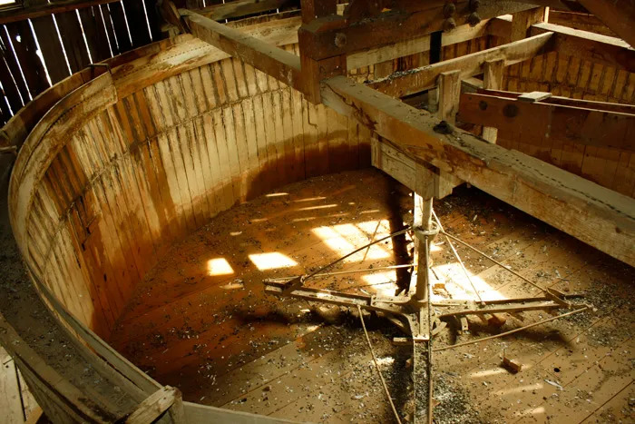
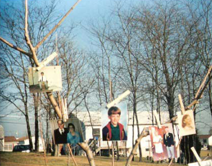

← Back to coryfugate.com
Select theme:
Default theme
Vintage Computer
Art Deco Luxury
Forest
Cyberpunk Synthwave
Archive
A collection of experiments and older projects

2026
Squirtle Wordle
A Pokémon guessing game based on Wordle. Catch all 151!
Access Project
2025
Armor of God
Vibe-coded platformer created w/ Maddox.
Access Project
2017
Christmas Countdown
Holiday-themed countdown with daily Christ-centered messages.
Access Project
2012
Portfolio Site 2012
Another updated portfolio, this one the final project for COMM462.
Access Project

2011
Digital Photobook
Interactive photography class project built using Flash.
Access Project

2011
Photography Blog
A WordPress blog and portfolio created for a photography class.
Access Project
2011
CSS Zen Garden
A cool CSS styling exercise and design challenge.
Access Project
2011
Big Jud's Website
A mock restaurant website created for COMM310.
Access Project
2011
COMM310 Guidebook
Web development assignments and project guide for COMM310.
Access Project
2011
Pineapple Papers
Site built for a friend's personal project, using PHP, HTML, CSS.
Access Project

2011
Book of Remembrance
Personal and family history website created for my FDREL261 course.
Access Project
2011
Portfolio Site 2011
An updated portfolio site with an entirely new design.
Access Project
2010
Space Camp
The final class project from CIT230.
Access Project
2010
Portfolio Site 2010
My first dev portfolio website. Originally done in PHP.
Access Project